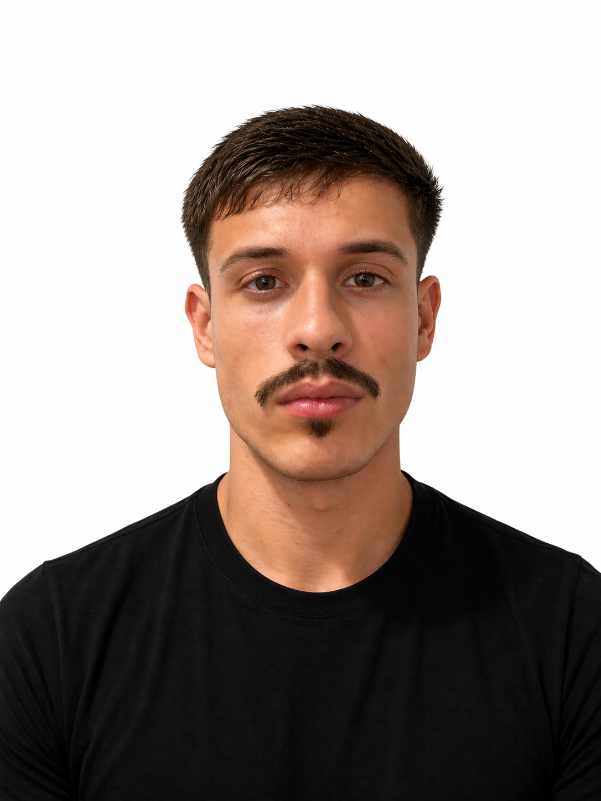
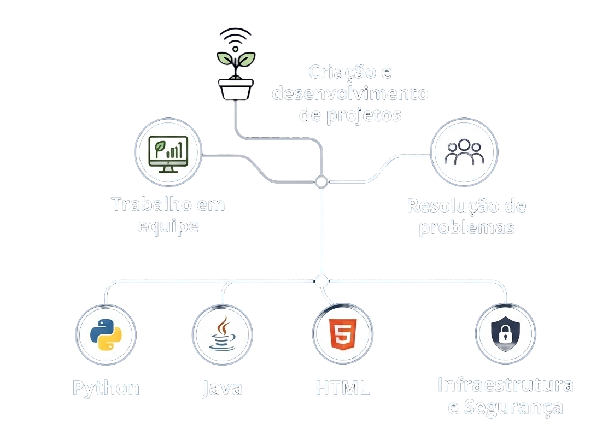
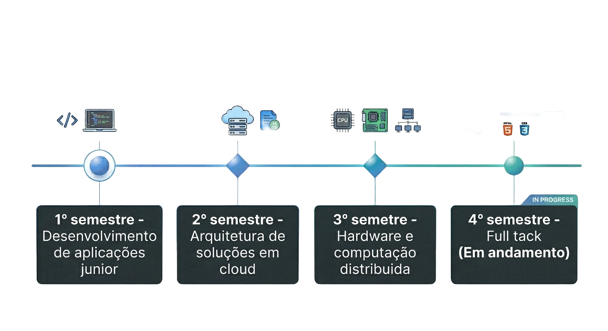
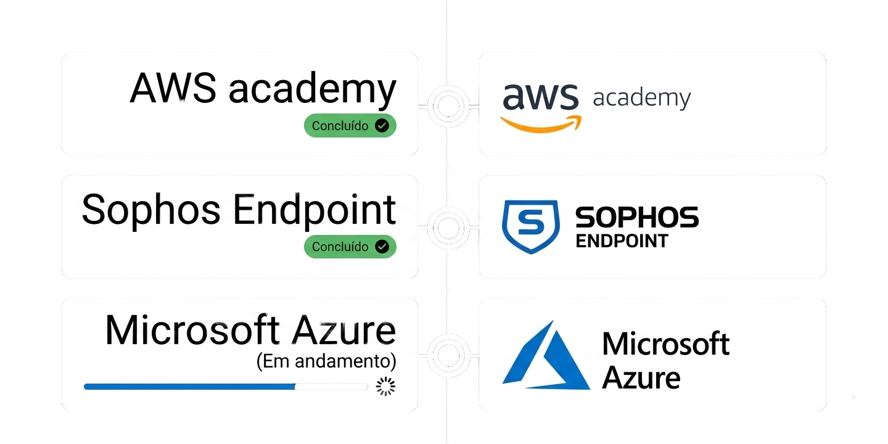

Certificações

AWS Academy
Sophos Endpoint
Microsoft Azure (Em andamento)

Certificações

AWS AcademySou estudante de Ciência da Computação e profissional de tecnologia da informação, com foco em infraestrutura, redes e administração de sistemas. Tenho experiência em projetos acadêmicos envolvendo análise de dados, estatística e configuração de ambientes de rede, aliando teoria e prática para compreender o funcionamento dos sistemas. Possuo perfil analítico e foco na resolução de problemas, atuando na manutenção e melhoria de ambientes de TI com responsabilidade. Também busco constantemente aprimorar meus conhecimentos em programação e segurança da informação, visando evoluir profissionalmente e contribuir com soluções eficientes e seguras.
Atuo na área de infraestrutura de TI, com experiência em administração de servidores, redes e serviços corporativos, incluindo ambientes Windows e Linux, gestão de acessos e aplicação de políticas de segurança. Tenho vivência em rotinas de backup, recuperação de dados e resolução de incidentes, sempre focado na continuidade e estabilidade dos serviços. Paralelamente, desenvolvo projetos acadêmicos envolvendo programação em Java e Python, trabalhando em equipe na resolução de problemas e na construção de soluções práticas.


Atualmente, estou no quarto semestre do curso de Ciência da Computação, desenvolvendo minha formação com foco em infraestrutura, redes de computadores e segurança da informação. Ao longo da graduação, participo de projetos acadêmicos que envolvem análise de dados, estatística e configuração de ambientes de rede, buscando integrar teoria e prática. Também venho ampliando meus conhecimentos em programação, com o objetivo de fortalecer minha base técnica e contribuir de forma mais completa em soluções tecnológicas.
Realizei cursos voltados à área de tecnologia da informação, com foco em infraestrutura, administração de sistemas e redes. Entre eles, destaco o AWS Academy, realizado durante a graduação, e o Sophos Endpoint, concluído no ambiente profissional. Atualmente, estou em processo de formação em Microsoft Azure, ampliando meus conhecimentos em soluções de computação em nuvem. Essas formações contribuem para o desenvolvimento de habilidades práticas e teóricas, alinhadas às demandas do mercado, com foco em segurança, gerenciamento de ambientes e resolução de problemas. Busco constante atualização para acompanhar a evolução da área de TI.

Participação em atividades acadêmicas e projetos práticos, com foco no desenvolvimento de soluções e aprimoramento técnico.
Entre em contato para oportunidades, parcerias ou troca de conhecimentos. Disponível para novos desafios na área de tecnologia.